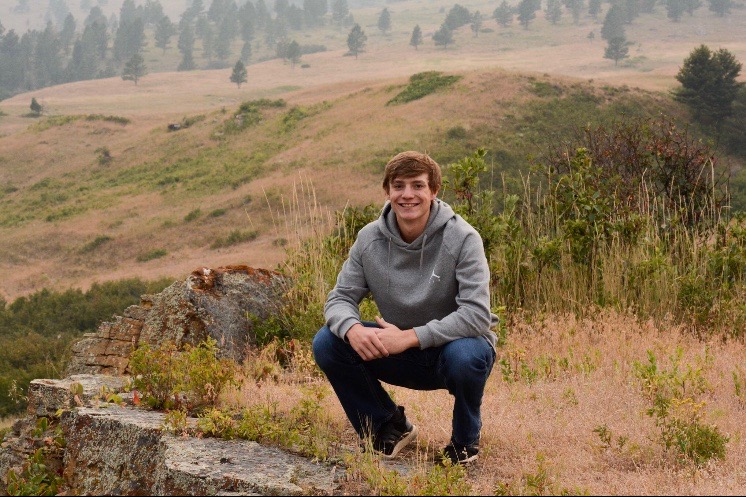
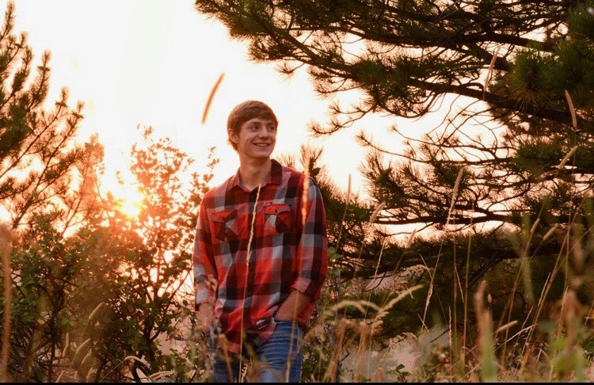
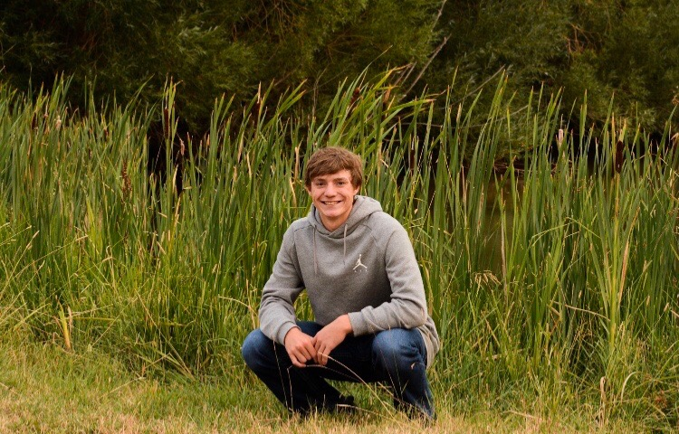
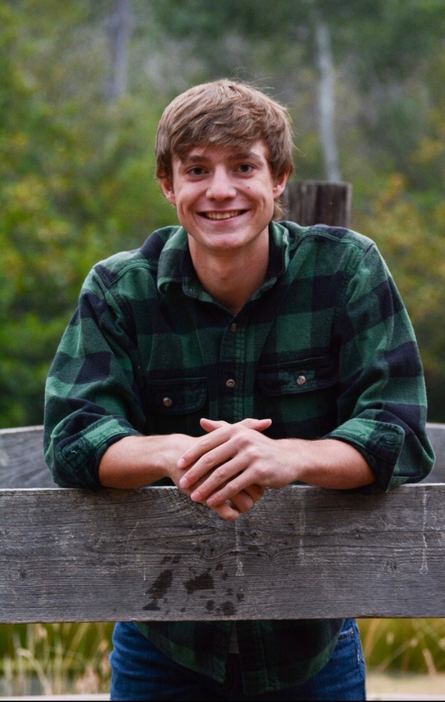

Krumwiede Photography






About Auriel
Auriel Krumwiede was born and raised in Lewistown, Montana. During her senior year of high school, she took senior pictures for her friends and for others who couldn't afford them. She knows very little about cameras but has always loved taking pictures as a pastime.